Perfil do Usuário
Introdução
Parte importante do desenvolvimento do projeto é definir um perfil do usuário, sendo assim possível entender mais sobre os usuários que utilizam o sistema, deve-se ressaltar diversas características tais como: interesse, experiência, faixa etária, conhecimento prévio etc.
Metodologia
Para a primeira técnicas foi elaborado um questionário no Google Forms de 15 questões a respeito dos usuaŕios, incluindo questões demográficas e relacionadas com o uso do site, além disso foi elaborado o Termo de Consentimento Livre e Esclarecido, de acordo com a Resolução Nº 466 de 12 de Dezembro de 2012, que está detalhado no artefato dos aspectos éticos, assim como a solicitação opcional do endereço de email do participante para conferir os resultados da pesquisa. O questionário foi divulgado em duas comunidades voltadas para leitores/escritores e afins, foi coletado as respostas dos participantes do questionário durante os dias 01/12 até 03/12. De outro modo, a segunda técnica utilizada foi a de entrevista, acompanhada de um usuário real.
Resultados do Questionário
Em relação às perguntas temos que na primeira pergunta ***1 - Qual sua idade***, temos os resultados na representação gráfica presente na Figura 1. Podemos notar que, cerca de 63% da amostra tem entre 18 a 25 anos e 31,8% dos participantes têm entre 26 e 34 anos.
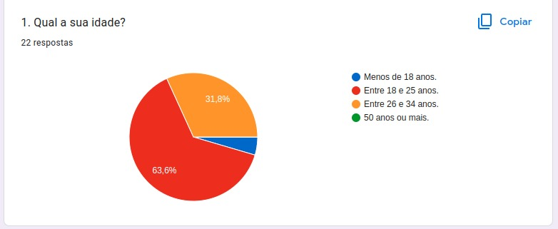
Figura 1 – Gráfico com o percentual de respostas da questão 1
Fonte: Retirada da página de resultados do Google Forms
Na segunda pergunta ***2 - Qual seu nível de escolaridade?*** Metade dos participantes têm o Ensino Superior incompleto, como mostra a Figura 2.
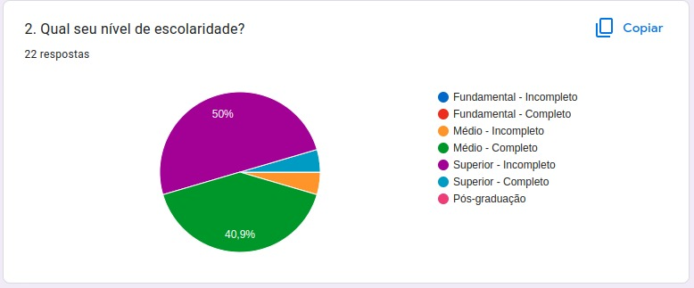
Figura 2 – Gráfico com o percentual de respostas da questão 2
Fonte: Retirada da página de resultados do Google Forms
Agora na Figura 3 temos ***3 - Como qual gênero você se identifica?** Que mostra que 72, 7% dos participantes marcaram a opção feminino no questionário.
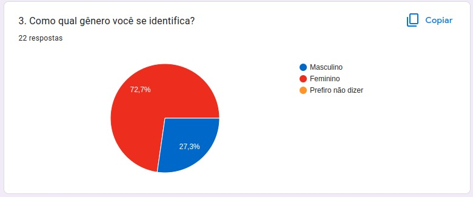
Figura 3 – Gráfico com o percentual de respostas da questão 3
Fonte: Retirada da página de resultados do Google Forms
A quarta pergunta : ***4 - Qual sua ocupação?*** Metade dos participantes são estudantes. enquanto 34,6% estão empregados.(Figura 4)
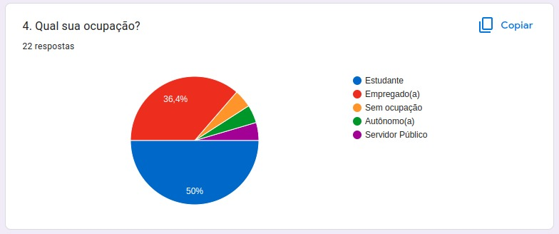
Figura 4 – Gráfico com o percentual de respostas da questão 4
Fonte: Retirada da página de resultados do Google Forms
Já na quinta pergunta do questionário, onde foi perguntado: ***5. Qual seu curso/cargo/função?*** Temos os resultados mostrados na Figura 5. Vale ressaltar que esta questão era opcional.

Figura 5 – Gráfico com o percentual de respostas da questão 5
Fonte: Retirada da página de resultados do Google Forms
Questão seis do questionário ***6. Qual é o seu nível de afinidade com tecnologia?***, maioria dos participantes marcaram a opção que se adapta e utiliza sistemas na medida do possível, como é ilustrado na Figura 6.
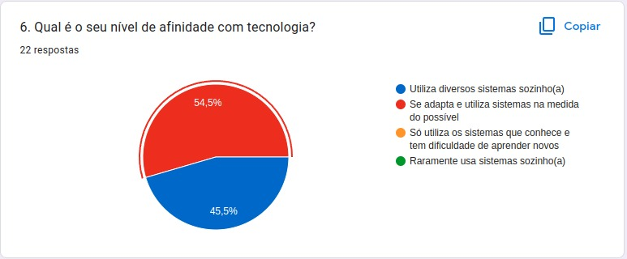
Figura 6 – Gráfico com o percentual de respostas da questão 6
Fonte: Retirada da página de resultados do Google Forms
Agora na Figura 7 temos ***7. Como você conheceu o Skoob?*** As respostas dos participantes ficaram bem distribuídas como mostrado na figura.

Figura 7 – Gráfico com o percentual de respostas da questão 7
Fonte: Retirada da página de resultados do Google Forms
A oitava pergunta : ***8 - Com que frequência você utiliza o Skoob?*** Maioria dos participantes do questionário cerca de 86% utilizam o site esporadicamente.(Figura 8)
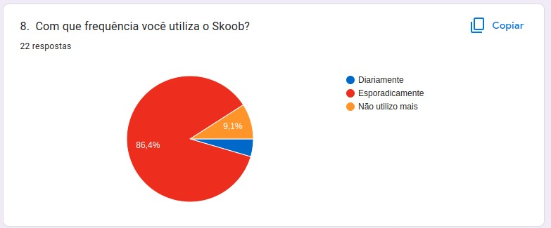
Figura 8 – Gráfico com o percentual de respostas da questão 8
Fonte: Retirada da página de resultados do Google Forms
Na nona pergunta ***9. Qual é o principal aparelho eletrônico que você utiliza para acessar o Skoob?*** 45,5% dos participantes utilizam o site pelo celular, enquanto também 45,5% utilizam computadores portáteis. Figura 9.
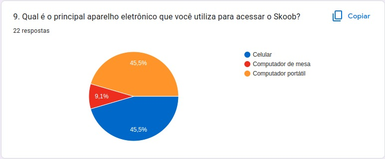
Figura 9 – Gráfico com o percentual de respostas da questão 9
Fonte: Retirada da página de resultados do Google Forms
Para a décima pergunta temos ***10 - Você gostaria que o Skoob oferecesse algum tutorial de como utilizar o site?*** A maioria dos participantes gostariam de tutoriais visuais como é ilustrado na Figura 10.

Figura 10 – Gráfico com o percentual de respostas da questão 10
Fonte: Retirada da página de resultados do Google Forms
Agora como mostrado na Figura 11 a questão ***11 - Você gosta de explorar todas as funcionalidades que o Skoob oferece? Ou costuma usar sempre as mesmas?***, 77.3% dos usuários não exploram as funcionalidades o Skoob, costumam utilizar sempre as mesmas.
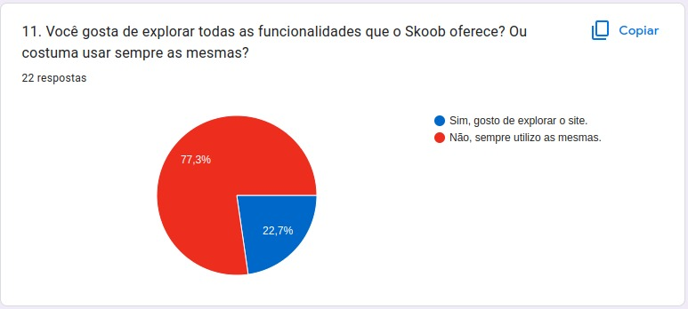
Figura 11 – Gráfico com o percentual de respostas da questão 11
Fonte: Retirada da página de resultados do Google Forms
Para a questão 12 onde se solicitado do participante ***12 - Qual é a funcionalidade do site que você mais utiliza?***, segue algumas das respostas, como é mostrado na Figrura 12 .
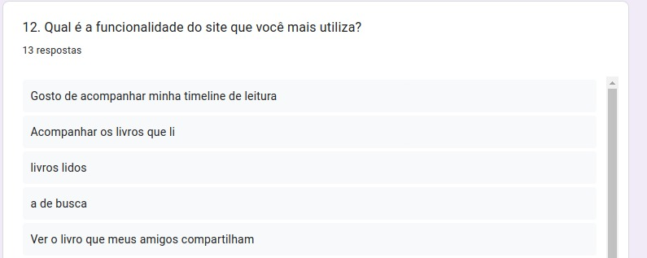
Figura 12 – Lista das respostas da questão 12
Fonte: Retirada da página de resultados do Google Forms
Para a décima terceira pergunta ***O quanto você julga que tem domínio sobre as funcionalidades que o site oferece?*** A maioria dos participantes dizem que têm pouco domínio sobre as funcionalidades que o site oferece (Figura 13).
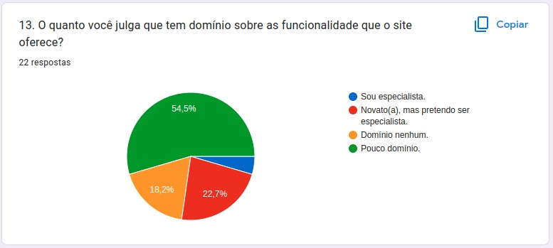
Figura 13 – Gráfico com o percentual de respostas da questão 13
Fonte: Retirada da página de resultados do Google Forms
Na penúltima e última questão que são perguntas conectadas, temos ***14 - Durante a utilização do site você já "clicou errado" em alguma função que trouxe algum prejuízo para você?***(Figura 14).Se o participante responder que que "Não" o questionário termina e ele já pode enviar sua contribuição, porém se ele responder que "Sim" ele segue para a questão ***15 - Você poderia dizer mais sobre essa funcionalidade e sua consequência negativa no uso do site?***(Figura 15), onde o participante pode detalhar como foi essa interação que o levou ao erro.
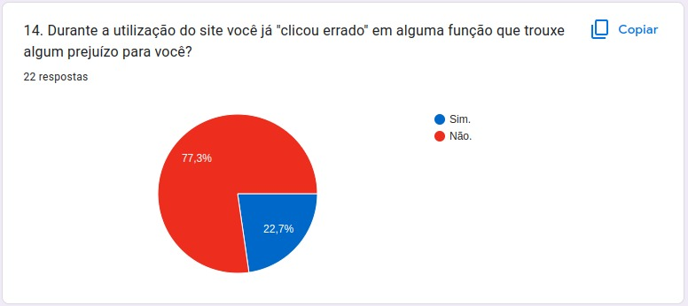
Figura 14 – Gráfico com o percentual de respostas da questão 14
Fonte: Retirada da página de resultados do Google Forms

Figura 15 – Algumas das respostas da questão 15
Fonte: Retirada da página de resultados do Google Forms
Resultados da Entrevista
Em relação às perguntas realizadas na entrevista com um usuário do skoob estão na Tabela 1. O usuário tem 21 anos, é homem, faz graduação na área de TI e tem facilidade com o uso de aplicações mas devido ao tempo que fica sem utilizar a aplicação acaba esquecendo como funciona certas funcionalidades.
| Número | Pergunta | Resposta |
|---|---|---|
| 1 | Quando você utiliza o skoob? | "Quando quero descobrir novos livros ou gêneros" |
| 2 | O que te fez escolher esse site ao invés de outros com mesma funcão? | "Foi recomendação e não cheguei a usar outros do tipo" |
| 3 | O que você gosta no skoob? | "Acompanhar diversos autores" |
| 4 | O que você não gosta no skoob? | "A interface ser um pouco confusa" |
| 5 | Você acredita que falte alguma função no skoob? Se sim, qual? | "Não sei" |
| 6 | Você sente dificuldade em utilizar o skoob? Se sim, onde? | "É difícil recordar onde fica cada funcionalidade" |
| 7 | Com que frequência você utiliza o skoob? | "Uma vez a cada 3 meses em média" |
| 8 | Tem alguma funcionalidade que você nunca usou? Se sim, porque? | "Nunca usei a ferramenta pra acompanhar as editoras de livros" |
| 9 | Qual atividade você mais realiza no skoob? | "Ver o que as pessoas que eu sigo estão lendo" |
Gravação da Entrevista
Conclusão
Levando em conta os dados coletados a partir do formulário, podemos concluir que o nosso perfil do usuário se baseia principalmente em mulheres da faixa etária dos 18 aos 34 anos, onde cerca de metade têm pouco domínio em realização a utilizar o sistema e se adaptam e utilizam sistemas na medida do possível. Umas das tarefas principais que é utilizada é acompanhar sua "estante virtual" e interação com amigos da rede social.
Referências
BARBOSA, Simone; SILVA, INTERAÇÃO HUMANO-COMPUTADOR. Local de publicação: Elsevier Editora Ltda, 2010.
Resolução CNS nº 466/2012. https://bvsms.saude.gov.br/bvs/saudelegis/cns/2013/res0466_12_12_2012.html acesso feito em 27 de novembro de 2022.
Histórico de versão
| Versão | Data | Descrição | Autor | Revisor |
|---|---|---|---|---|
| 1.0 | 03/12/2022 | Inicialização da página de perfil de usuário | Philipe | Hellen Fernanda |
| 1.1 | 12/12/2022 | Adcionando o resultado da entrevista com usuário | João Pedro Alves Machado | Hellen Fernanda |